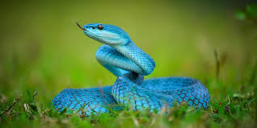
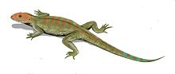

Definicion

Los reptiles (Reptilia) son una clase de animales vertebrados amniotas provistos de escamas epidérmicas de queratina. Fueron
muy abundantes en el Mesozoico, época en la que surgieron los dinosaurios, pterosaurios, ictiosaurios, plesiosaurios y mosasaurios.
Según la taxonomía tradicional los reptiles son considerados una clase, pero según la sistemática cladística, son un grupo
parafilético (que no incluye a todos sus descendientes), por tanto sin valor taxonómico. Las aves y mamíferos tradicionalmente
se consideran clases independientes, mientras que sus antepasados de piel escamosa y sin plumas o pelos se suelen clasificar dentro
de los reptiles. En su lugar se ha preferido el uso del clado Sauropsida (reptiles modernos + aves) por ser monofilético.
Caracteristicas

La mayoría de los reptiles se han adaptado a la vida terrestre, pero finalmente se ha descubierto que algunos viven en el agua.
Una piel resistente y escamosa es una de sus adaptaciones. Otras de las adaptaciones que han contribuido al éxito de los reptiles
en tierra firme son que incluyen pulmones bien desarrollados, un sistema circulatorio de doble circuito, un sistema excretor que
conserva el agua, fuertes extremidades, fertilización interna y huevos terrestres con cascarón. Además los reptiles pueden controlar
su temperatura corporal cambiando de lugar.
Control de temperatura
La capacidad para controlar su temperatura corporal es una enorme ventaja para los animales activos. Los animales de los que hemos
hablado hasta ahora son ectotérmicos. Los ectotérmicos utilizan la conducta para controlar la temperatura del cuerpo. Para calentarse,
se tienden bajo el sol todo el día. Para enfriarse, se mueven hacia la sombra, nadan, o se refugian en madrigueras subterráneas.
Alimentacion
La mayor parte de los reptiles son carnívoros y poseen un tracto digestivo sencillo y corto, ya que la carne es bastante simple de
descomponer y digerir. La digestión es más lenta que en los mamíferos, lo que refleja su lento metabolismo durante el reposo y su
incapacidad para dividir y masticar sus alimentos. Este metabolismo tiene requerimientos de energía muy bajos, permitiendo que los
grandes reptiles, como los cocodrilos y las grandes serpientes constrictoras, puedan vivir de una comida grande por meses, digiriendo
lentamente una presa de gran tamaño.
Los reptiles herbívoros, en cambio, tienen los mismos problemas de masticación de los mamíferos herbívoros, pero, a falta de los dientes
complejos que poseen éstos últimos, los reptiles tragan rocas y piedras (llamados gastrolitos) para facilitar la digestión: las rocas
se lavan en el estómago, ayudando a moler la materia vegetal. Las tortugas marinas, cocodrilos e iguanas marinas también utilizan los
gastrolitos como lastre, lo cual les sirve de ayuda para la inmersión.
Respiracion
Los pulmones de los reptiles son esponjosos y tienen mayor superficie para intercambio de gases que los anfibios. Esto es debido a que la
mayoría de los reptiles no puede intercambiar gases a través de la piel, como hacen la mayoría de los anfibios de piel húmeda. Muchos
reptiles tienen músculos que rodean las costillas y expanden la cavidad torácica para inhalar, o colapsan la cavidad para exhalar.
Varias especies de cocodrilos también poseen repliegues cutáneos que separan la boca de los conductos nasales; así respiran por las fosas
nasales mientras tienen la boca abierta. Para intercambiar gases con el medio ambiente, los reptiles poseen dos pulmones funcionales o bien,
en el caso de ciertas especies de serpientes, solo uno.
Sistema circulatorio
Los reptiles poseen un eficaz sistema circulatorio de doble circuito. Una de las vías lleva y recoge sangre de los pulmones. La otra vía
lleva y recoge sangre del resto del cuerpo. El corazón de los reptiles contiene dos aurículas y uno o dos ventrículos. La mayoría de los
reptiles tienen un ventrículo único con un septo parcial; permite separar la sangre oxigenada de la sangre no oxigenada durante el ciclo
de bombeo. Los cocodrilos y caimanes tienen los corazones mejor desarrollados entre los reptiles modernos, pues están compuestos de dos
aurículas y dos ventrículos, conformación que también existe en aves y mamíferos.
Anatomia
El patrón básico del encéfalo de un reptil es semejante al de un anfibio, aunque el cerebro y el cerebelo son considerablemente más grandes
comparados con el resto de la masa encefálica. Los reptiles que son activos durante el día, suelen poseer ojos complejos y pueden percibir
bien los colores. Muchas serpientes tienen también un excelente sentido del olfato. Además de las fosas nasales, la mayoría de los reptiles
tiene un par de órganos sensoriales en el paladar, los cuales pueden detectar la presencia de sustancias químicas cuando el reptil saca la
lengua. Los reptiles tienen oídos simples con tímpano externo y un hueso único que conduce el sonido al oído interno. Las serpientes también
pueden captar vibraciones del suelo. En comparación con muchos anfibios, los reptiles con patas tienden a tener extremidades más grandes y
fuertes que les permiten caminar, correr, excavar, nadar o trepar. Además, las patas de algunos reptiles están más por debajo del cuerpo que
en los anfibios, lo que les permite ser más pesados. Igual que en los anfibios, la espina dorsal de los reptiles ayuda a realizar gran parte
del movimiento.
Reproduccion
Todos los reptiles se reproducen por fecundación interna; el macho deposita su esperma en el interior del cuerpo de la hembra. Casi todos los
reptiles machos poseen un par de órganos semejantes al pene —los hemipenes— que les permiten depositar el esperma en el cuerpo de la hembra.
Después de la fecundación, el aparato reproductor de la hembra cubre los embriones con varias membranas y un cascarón correoso.
Taxonomia
Según la taxonomía tradicional, los reptiles incluyen tres grandes linajes, contemplados habitualmente como subclases:
• Synapsida
• Anapsida
• Diapsida
Según la sistemática cladística, los reptiles son parafiléticos, como puede comprobarse en el siguiente cladograma, basado
en Tree of Life y muy simplificado:
| Amniota |
| Synapsida |
Sauropsida |
| Pelycosauria |
Therapsida |
Anapsida |
Diapsida |
Los sinápsidos, que incluyen los actuales mamíferos y una gran cantidad de formas fósiles relacionadas con ellos conocidos como "reptiles" mamiferoides, no deben clasificarse
dentro de los reptiles, que en sentido estricto, incluyen solo anápsidos y diápsidos. Las aves quedan englobadas en el clado Dinosauria, junto a tiranosaurios y formas afines;
nótese que el grupo actual más cercano filogenéticamente a las aves son los cocodrilos. Si se incluyen las aves, el grupo Reptilia (=Sauropsida) es monofilético.
Actualmente, se usa el término Sauropsida para designar la agrupación Anapsida + Diapsida; Sauropsida es sinónimo de Reptilia en sentido restrictivo (no incluyendo Synapsida);
el antiguo concepto de Reptilia (Synapsida + Anapsida + Diápsida) tiende a abandonarse.